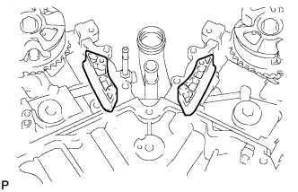

ПРОКЛАДКА ГОЛОВКИ БЛОКА ЦИЛИНДРОВ > СНЯТИЕ |
| 1. СНИМИТЕ КРЫШКУ ЦЕПНОГО ПРИВОДА ГАЗОРАСПРЕДЕЛИТЕЛЬНОГО МЕХАНИЗМА В СБОРЕ |
Снимите крышку цепного привода газораспределительного механизма (Нажмите здесь).
| 2. УСТАНОВИТЕ ПОРШЕНЬ ЦИЛИНДРА № 1 В ВМТ ТАКТА СЖАТИЯ |
Временно вверните установочный болт шкива.
Поворачивая коленчатый вал по часовой стрелке, совместите установочные метки на зубчатом диске датчика положения коленчатого вала с осевой линией отверстия правого блока (ВМТ такта сжатия).
| *1 | Центральная линия |
| *2 | Установочная метка |
| *3 | Пластина датчика |
Убедитесь, что установочные метки на зубчатых колесах распредвала совмещены с установочными метками на крышках подшипников, как показано на рисунке.
Если это не удается сделать, проверните коленчатый вал на 1 оборот (360°) и совместите метки, как указано выше.
| *1 | Установочная метка |
| 3. СНИМИТЕ НАТЯЖИТЕЛЬ ЦЕПИ № 1 В СБОРЕ |
Отведите стопорную пластину вверх, чтобы освободить фиксатор, и глубоко вдавите плунжер в натяжитель.
| *1 | Плунжер |
| *2 | Стопорная пластина |
| *3 | Штифт |
Опустите стопорную пластину, чтобы ввести фиксатор в зацепление, и вставьте в отверстие стопорной пластины штифт диаметром 1,27 мм (0,0500 дюйма).
 |
Выверните 2 болта и снимите натяжитель цепи № 1 в сборе.
| 4. СНИМИТЕ БАШМАК НАТЯЖИТЕЛЯ ЦЕПИ |
 |
Снимите башмак натяжителя цепи.
| 5. СНИМИТЕ ЦЕПЬ В СБОРЕ |
Проверните коленчатый вал на 10° против часовой стрелки, чтобы ослабить цепь на ведущей звездочке коленчатого вала.
| *1 | Центральная линия |
| *2 | Установочная метка |
| *3 | Пластина датчика |
Выверните установочный болт шкива.
 |
Снимите цепь с ведущей звездочки цепи ГРМ на коленчатом валу и поместите ее на коленчатый вал.
 |
Поверните зубчатое колесо распредвала ряда 1 по часовой стрелке приблизительно на 60° и установите его, как показано на рисунке. Не забудьте ослабить цепь между рядами.
Снимите цепь в сборе.
| *A | для ряда 1 |
| 6. СНИМИТЕ ВАЛ ПРОМЕЖУТОЧНОЙ ШЕСТЕРНИ № 1 |
 |
С помощью шестигранного ключа на 10 мм снимите вал промежуточной шестерни № 2, промежуточную шестерню № 1 и вал промежуточной шестерни № 1.
| 7. СНИМИТЕ УСПОКОИТЕЛЬ ЦЕПИ № 1 |
 |
Выверните 2 болта и снимите успокоитель цепи №1.
| 8. СНИМИТЕ УСПОКОИТЕЛЬ ЦЕПИ № 2 |
|  |
Снимите 2 успокоителя цепи № 2.
| 9. СНИМИТЕ ВЕДУЩУЮ ЗВЕЗДОЧКУ ЦЕПИ ГРМ НА КОЛЕНЧАТОМ ВАЛУ |
Снимите ведущую звездочку цепи ГРМ на коленчатом валу.
| 10. СНИМИТЕ ЗУБЧАТЫЕ КОЛЕСА РАСПРЕДВАЛА И ЦЕПЬ № 2 (для ряда 1) |
 |
Подняв натяжитель цепи № 2 в сборе, зафиксируйте его, вставив в отверстие штифт диаметром 1,0 мм (0,0394 дюйма).
| *1 | Штифт |
| *2 | Плунжер |
| *a | Нажмите |
 |
Удерживая с помощью SST шестигранный участок каждого распредвала, ослабьте болты зубчатого колеса распредвала и зубчатого колеса распредвала выпускных клапанов.
| *a | Поверните |
| *b | Удерживайте |
Выверните 2 болта и снимите зубчатое колесо распредвала в сборе вместе с надетой цепью № 2.
| 11. СНИМИТЕ НАТЯЖИТЕЛЬ ЦЕПИ № 2 В СБОРЕ |
 |
Выверните болт и снимите натяжитель цепи № 2.
| 12. СНИМИТЕ КРЫШКУ ПОДШИПНИКА РАСПРЕДВАЛА (для ряда 1) |
 |
Проверьте, чтобы распредвалы располагались, как показано на рисунке.
| *1 | Штифт |
| *a | Вид спереди |
В несколько приемов равномерно ослабьте и выверните 8 болтов крышек подшипников в последовательности, показанной на рисунке.
В несколько приемов равномерно ослабьте и выверните 12 болтов крышек подшипников в последовательности, показанной на рисунке.
Снимите 5 крышек подшипников распредвала.
Снимите распредвал и распредвал № 2.
| 13. СНИМИТЕ ПРАВЫЙ КОЖУХ РАСПРЕДВАЛА В СБОРЕ |
 |
Снимите правый кожух распредвала в сборе, вставив отвертку между головкой блока цилиндров и правым кожухом распредвала.
| *1 | Защитная клейкая лента |
| 14. СНИМИТЕ ЗУБЧАТЫЕ КОЛЕСА РАСПРЕДВАЛА И ЦЕПЬ № 2 (для ряда 2) |
 |
Отжав натяжитель цепи № 3 в сборе вниз, зафиксируйте его, вставив в отверстие штифт диаметром 1,0 мм (0,0394 дюйма).
| *1 | Штифт |
| *2 | Плунжер |
| *a | Нажмите |
 |
Удерживая с помощью SST шестигранный участок каждого распредвала, ослабьте болты зубчатого колеса распредвала и зубчатого колеса распредвала выпускных клапанов.
| *a | Поверните |
| *b | Удерживайте |
Выверните 2 болта и снимите зубчатое колесо распредвала вместе с надетой цепью № 2.
| 15. СНИМИТЕ НАТЯЖИТЕЛЬ ЦЕПИ № 3 В СБОРЕ |
Выверните болт и снимите натяжитель цепи № 3.
| 16. СНИМИТЕ КРЫШКУ ПОДШИПНИКА РАСПРЕДВАЛА (для ряда 2) |
Проверьте, чтобы распредвалы располагались, как показано на рисунке.
| *1 | Штифт |
| *a | Вид спереди |
 |
В несколько приемов равномерно ослабьте и выверните 8 болтов крышек подшипников в последовательности, показанной на рисунке.
В несколько приемов равномерно ослабьте и выверните 13 болтов крышек подшипников в последовательности, показанной на рисунке.
Снимите 5 крышек подшипников распредвала.
Снимите распредвалы № 3 и 4.
| 17. СНИМИТЕ ЛЕВЫЙ КОЖУХ РАСПРЕДВАЛА В СБОРЕ |
Снимите левый кожух распредвала, вставив отвертку между головкой блока цилиндров и левым кожухом распредвала.
| *1 | Защитная клейкая лента |
| 18. СНИМИТЕ РЫЧАГ ПРИВОДА КЛАПАНА № 1 В СБОРЕ |
Снимите 24 рычагов приводов клапанов с головки блока цилиндров.
| 19. СНИМИТЕ МЕХАНИЗМ РЕГУЛИРОВКИ ЗАЗОРА В ПРИВОДЕ КЛАПАНА В СБОРЕ |
Снимите 24 механизма регулировки зазора в приводе клапана с головки блока цилиндров.
| 20. СНИМИТЕ КОЛПАК ШТОКА КЛАПАНА |
Снимите 24 колпака штоков клапанов с головки блока цилиндров.
| 21. СНИМИТЕ ЗАДНИЙ СОЕДИНИТЕЛЬ ПЕРЕПУСКА ОХЛАЖДАЮЩЕЙ ЖИДКОСТИ |
 |
Выверните 2 болта, отверните 4 гайки и снимите задний соединитель перепуска охлаждающей жидкости и 2 прокладки.
Снимите кольцевое уплотнение с выпускного патрубка охлаждающей жидкости № 1.
| 22. СНИМИТЕ ГОЛОВКУ БЛОКА ЦИЛИНДРОВ В СБОРЕ |
 |
С помощью 12-гранного ключа на 8 мм в несколько приемов равномерно ослабьте 10 болтов крепления головки блока цилиндров в последовательности, показанной на рисунке. Выверните 8 болтов головки блока цилиндров и снимите плоские шайбы.
Снимите головку блока цилиндров в сборе.
| 23. СНИМИТЕ ЛЕВУЮ ГОЛОВКУ БЛОКА ЦИЛИНДРОВ |
В несколько приемов равномерно ослабьте и выверните 2 болта крепления головки блока цилиндров в последовательности, показанной на рисунке.
С помощью 12-гранного гаечного ключа на 10 мм в несколько приемов равномерно ослабьте 8 болтов в последовательности, показанной на рисунке. Выверните 8 болтов головки блока цилиндров и снимите плоские шайбы.
Снимите левую головку блока цилиндров.
| 24. СНИМИТЕ ПРОКЛАДКУ ГОЛОВКИ БЛОКА ЦИЛИНДРОВ |
| 25. СНИМИТЕ ПРОКЛАДКУ ГОЛОВКИ БЛОКА ЦИЛИНДРОВ № 2 |